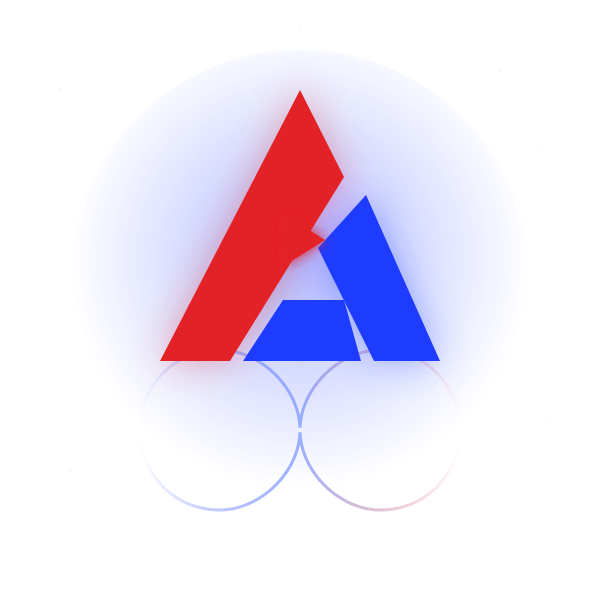

Channel Strategy
A content plan built around your niche, audience, and goals — not generic best practices.
Where every engagement startsCreative. Connected. Limitless.
Atifinity plans, produces, and manages YouTube content — so every upload builds toward one channel identity, not just another video.

02 — What We Do
From the first content idea to a fully managed channel — book one service or let us run the whole thing.
A content plan built around your niche, audience, and goals — not generic best practices.
Where every engagement startsConcepts, scripts, and shot lists that turn ideas into videos worth watching.
Pacing, sound, and structure that keep viewers watching to the end.
Thumbnails designed to earn the click, built around what's already working in your niche.
Ongoing upload scheduling, optimization, and reporting — the channel keeps moving without you managing it.
03 — Why Atifinity
No fake stats here — just how we're set up, and how we think.
Strategy, production, editing, and channel management sit under one roof — no handoffs between disconnected freelancers.
You talk to the people doing the work over WhatsApp, not an account manager relaying messages back and forth.
Every package is built around your niche and goals during a real conversation, not a fixed template applied to every client.
How We Think
We don't ask "what should we upload?"
We ask "what should the channel become?"
04 — Packages
Starting points, not fixed templates — the exact scope gets set on a quick call.
Best for — creators who already have a direction and just need consistent, high-quality production.
Strategy and channel management are available as add-ons.
Custom quote — scoped on a call
Get StartedBest for — creators and brands ready for consistent execution, with strategy and content working together.
Our most common starting point for growing channels.
Custom quote — scoped on a call
Get StartedBest for — teams that want Atifinity involved end-to-end, running the channel day to day.
Best once you already have proof the content works and want it run for you.
Custom quote — scoped on a call
Get Started05 — Our Work
A selection of video content produced by our team — click any card to watch with full audio and controls.
America Bridge
CIA
Debt
Different Eye Colour Advantages
Drug Cartel
Eurodollars
Honda
McIntosh
Melbourne
Mexico
Neom
Petrodollar
Pied Piper
The Promise
US Navy Destroyer
Wildling
Wizard of Oz
06 — Client Reviews
Real creators and media brands who rely on Atifinity for consistent growth, high-retention editing, and production.
07 — Our Process
No forms, no waiting on a callback — just a straight path from first message to a channel that's actively growing.
We talk through your channel, audience, and goals on WhatsApp.
We scope the right package and decide what the channel should become.
We produce, edit, and design each video against that plan.
You review and request changes before anything goes live.
We publish, track performance, and refine the plan from there.
We handle YouTube channel strategy, video production, editing, thumbnails, and ongoing channel management — pick one service or let us run the whole operation.
No. We work with channels at different stages — what matters is that you're ready to commit to an actual plan, not just post more often.
It starts with a conversation about your channel and goals, then moves through Discover, Direction, Create, Refine, and Grow — see the full breakdown above.
Yes. Most channels start with Start or Grow and move into Partner once there's a system worth scaling.
Yes — strategy, editing, and channel management are all done remotely, so your location isn't a factor.
You'll land in a WhatsApp conversation with our team, tell us about your channel, and we'll figure out the right fit together — no forms, no waiting on a callback.
Ready When You Are
No pitch, no pressure — just a conversation about where your channel is and where it could go.
Talk About Your Channel